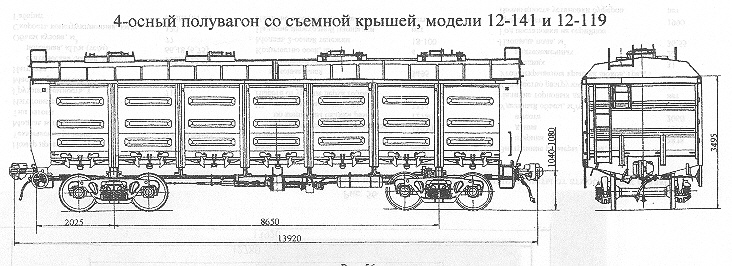

Назначение: для перевозки сыпучих, крупнокусковых, штучных и других грузов, требующих защиты от атмосферных осадков
Параметры
| для 12-141 | для 12-119 | |
| Номер проекта | 184.00.00.000 | 184.00.00.000-01 |
| Технические условия | ||
| Модель вагона | 12-141 | 12-119 |
| Тип вагона | ||
| Изготовитель | ГПО "Уралвагонзавод" | ГПО "Уралвагонзавод" |
| Грузоподъемность, т | 68 | 68 |
| Масса тары вагона, т | 25,6±0,4 | 25,5±0,5 |
| Нагрузка: статическая осевая, кН(тс) |
230(23,5) | 230(23,5) |
| погонная, кН/м(тс/м) | 66,19(6,75) | 66,19(6,75) |
| Объем кузова, м³ | 90,6 | 89,6 |
| Скорость конструкционная, км/ч | 120 | 120 |
| Габарит | 0-ВМ(01-Т) | 0-ВМ(01-Т) |
| База вагона, мм | 8650 | 8650 |
| Длина, мм: по осям сцепления автосцепок |
13920 | 13920 |
| по концевым балкам рамы | 12732 | 12732 |
| Ширина максимальная, мм | 3134 | 3134 |
| Высота от уровня верха головок рельсов, мм: до верхней обвязки |
3475 | 3475 |
| до нижней обвязки | 1415 | 1415 |
| до оси автосцепки | 1040-1080 | 1040-1080 |
| Количество осей, шт. | 4 | 4 |
| Модель 2-осной тележки | 18-100 | 18-100 |
| Наличие переходной площадки | нет | нет |
| Наличие стояночного тормоза | есть | есть |
| Внутренние размеры кузова, мм: длина в свету по верхней обвязке |
12750 | 12702 |
| ширина в свету по верхней обвязке | 2911 | 2911 |
| высота | ||
| Удельный объем, м3/т | 1,41 | 1,31 |
| Наличие торцовых дверей | нет | нет |
| Количество разгрузочных люков, шт. | 14 | 14 |
| Угол открывания крышек люков, град.: средних |
31 | 31 |
| надтележечных | 22 | 22 |
| над тормозным цилиндром | 27 | 27 |
| Год постановки на серийное производство | ||
| Возможность установки буферов |